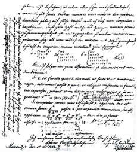

Em uma definição matemática uma conjectura é uma proposição que muitos matemáticos acreditam ser verdadeira, com base em presunções, evidências, pressentimentos, hipóteses, porém ainda não conseguiram prová-la, é o primeiro caminho para a formação dos teoremas, por exemplo, o teorema de Pitágoras que diz que a soma dos quadrados dos catetos é igual ao quadrado da hipotenusa um dia foi conjectura até que fossse possível realizar uma demonstração rigorosa e geral a cerca da afirmação.
Atualmente, na matemática temos uma série de conjecturas que são alvos de estudos de muitos matemáticos que ansieam demonstrá-las, aqui vamos dar destaque à conjectura de goldbach. A famosa conjectura é um dos problemas mais antigos não resolvidos da matemática. Foi proposta no dia 7 de junho de 1742 pelo matemático prussiano Christian Goldbach, em uma carta escrita para Leonhard Euler. Els afirma que "TODO NÚMERO PAR MAIOR QUE DOIS PODE SER REPRESENTADO COMO A SOMA DE DOIS NÚMEROS PRIMOS"
| EXEMPLIFICAÇÃO DA CONJECTURA DE GOLDBACH | |||
|---|---|---|---|
| 4 | 2 + 3 | ||
| 6 | 3 + 3 | ||
| 8 | 5 + 3 | ||
| 10 | 5 + 5 | ||
| 12 | 7 + 5 | ||
| 14 | 7 + 7 | ||